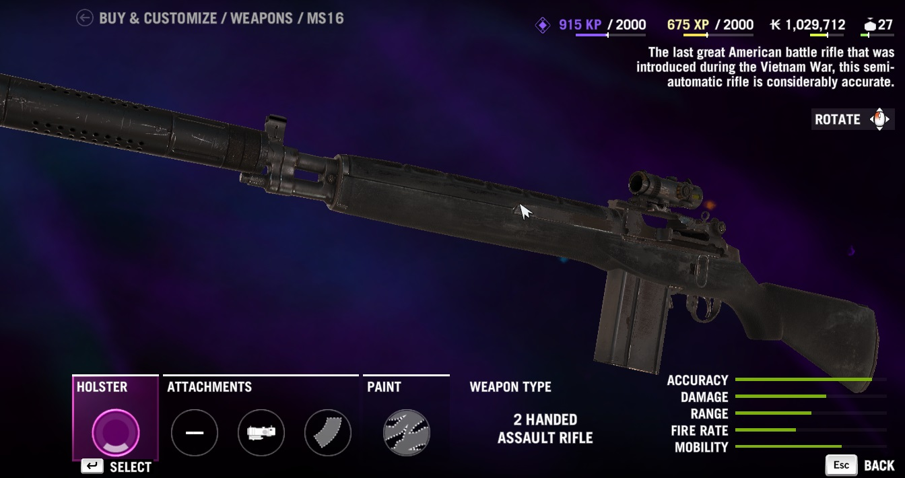
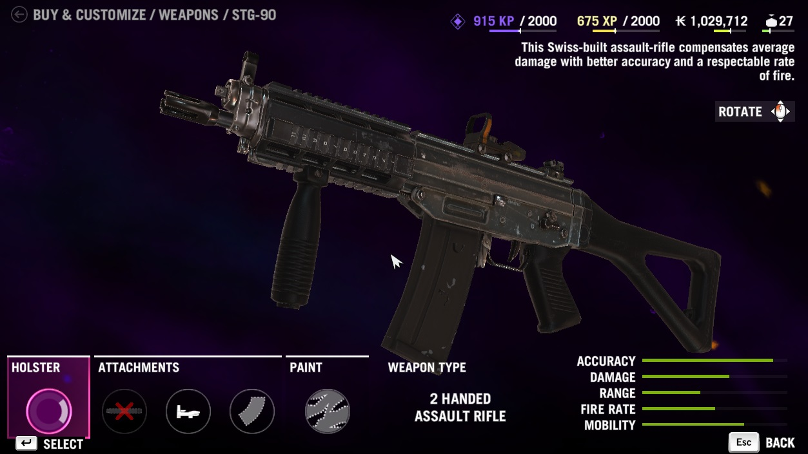
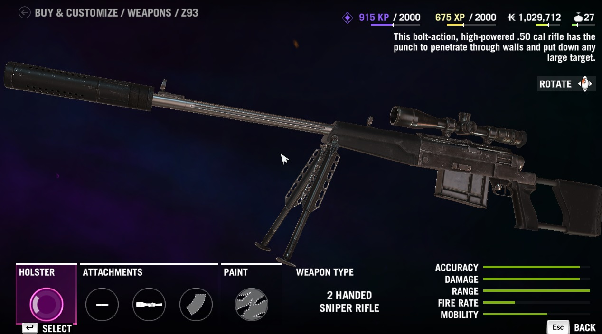
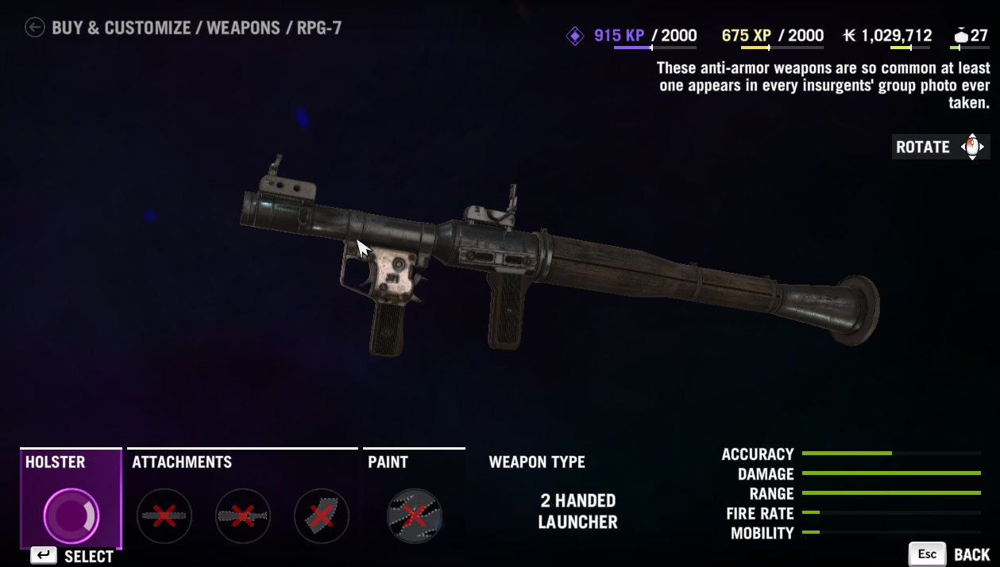
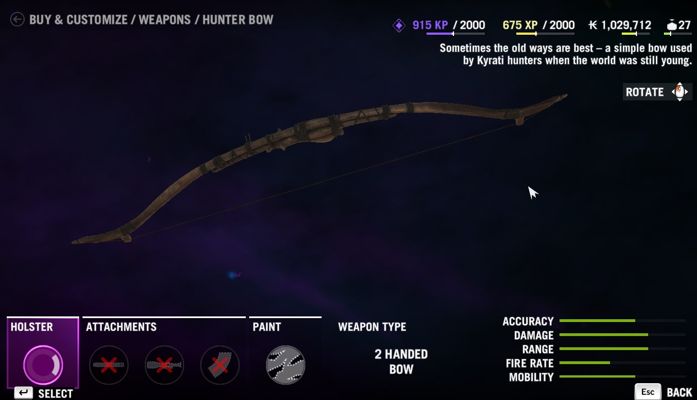
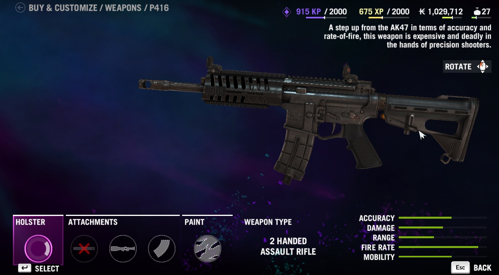
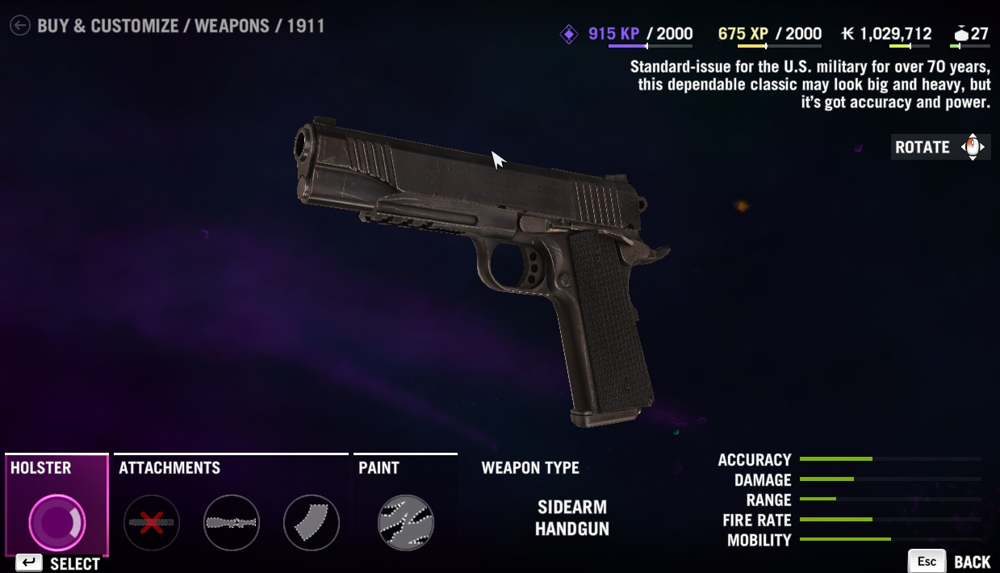
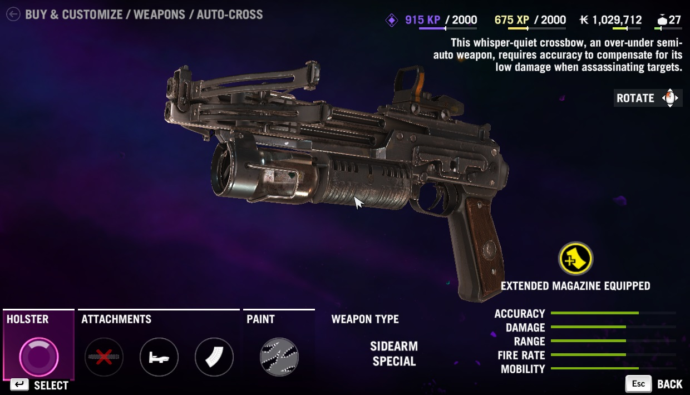
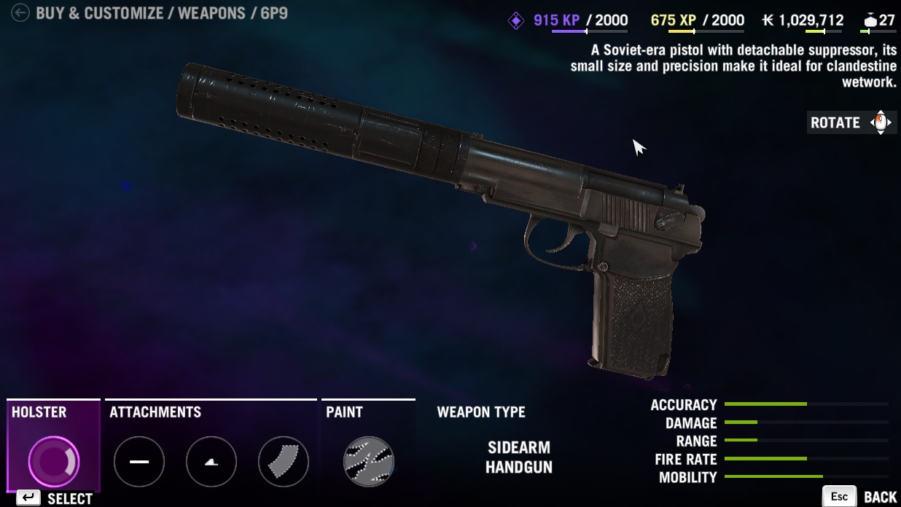

One of the most accurate assault rifles in the game. It is a semi-automatic and makes a good sniper/assault rifle hybrid. can be fitted with optical sights, extended magazine, and a sound suppressor. Great for stealth missions.
A mid-range assault rifle, but it is available early in the game. It is fully automatic and has great accuracy and rate of fire. It can be fitted with optical sights and extended magazines.
A large and powerful bolt action sniper rifle. Great for taking down enemies at extreme distances. It cna be fitted with extended magazines, and enhanced scope for further zoom, and a sound suppressor. Great for stealthy shots from afar!
One of the most well known anti-vehicle weapons in the world. Very dangerous and does tremendous amounts of damage. Perfect for ambushing convoys of vehicles.
Although this weapons is very old, it is still a very powerful weapon. Completely silent, it allows for complete undetection when firing. ALso using this weapon on animals awards a clean kill which allows for double the skin to be harvested when hunting.
A major step up from the Ak-47 and the STG-90, this weapon is very powerful and very accurate. It can be equipped with an extended magazine and optical sights. This weapon is however, much more expensive than its counterparts.
A true classic. This weapon has been used for years by militaries across the globe. Although it is a full size pistol, it has great power and accuracy. It can be equipped with optical sights and an extended magazine.
A modern upgrade to the hunterbow. Allows for rapid fire of silent arrows that so large amounts of damage. It can be equipped with optical sights and an extended magazine. Like the bow, it also awards clean kills.
A compact and small handgun that is useful for close encounters or stealth. It can be fitted with a sound suppressor, night sights, or an extended magazine.
